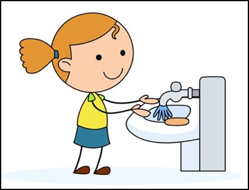
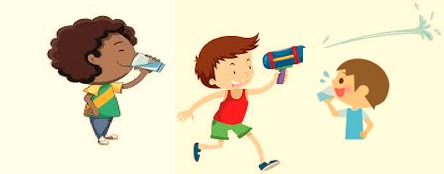
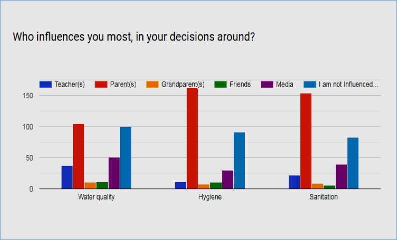
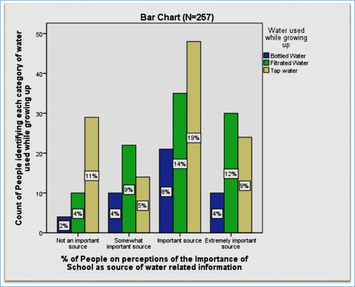
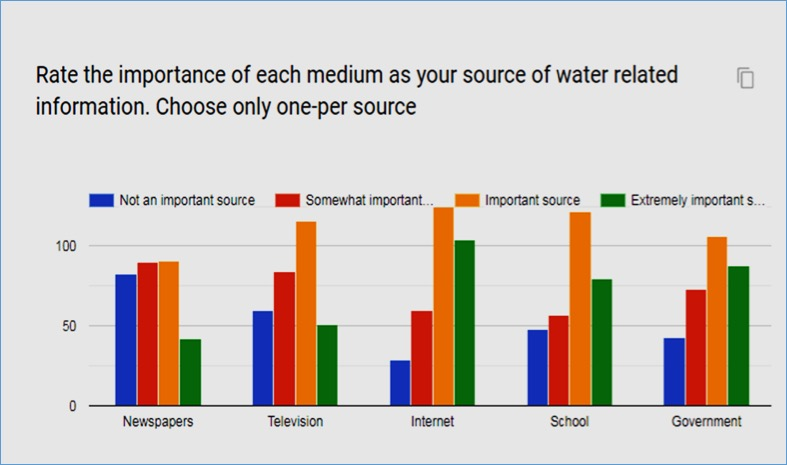

RESULTS
New York City water is safe childrenThe water in New York City is safe. Schools, parents and school staff should rest assured that drinking water is of the highest quality in the world and meets or exceeds all federal and state standards. Water tests in the city exceed 600,000 times a year. The Department of Energy works with other urban agencies to ensure that our students have safe drinking water in schools.
 New Yorkers * From the data point of view, young people's choice of water is more diversified. This has a certain relationship with their mentality of seeking knowledge. But they do not exclude New York's tap water.
* As peopke get older, they start drinking tap water regularly.
* Drinking tap water is one of the daily habits of New Yorkers.
Medium power The media help people understand the water quality in New York.